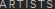
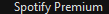
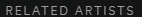
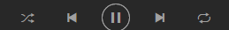

# Hiding local filepaths from local_dirs import screenshotsDir, target_csv import shutil import fnmatch import os import csv import time from datetime import date class MonthlyListenersScrape(): """Class for scraping monthly listeners stats from Spotify Desktop client""" def __init__(self, target_csv_path, screenshots_dir, chunk_size): self.csv_path = target_csv self.screenshots_dir = screenshots_dir self.count = 0 self.chunk_size = chunk_size self.last_chunk_index = 0 self.total_artists = None self.errors = set([]) self.error_count = 0 def init_screenshot_dir(self): """Creates a screenshot dir for the current date""" today = str(date.today()) self.screenshots_dir = self.screenshots_dir + today if not os.path.isdir(self.screenshots_dir): os.mkdir(self.screenshots_dir) def return_chunk_from_csv(self, last_index): with open(self.csv_path, 'rb') as csvfile: contents = "index" + csvfile.read() contents = contents.split("\r\n") if self.total_artists is None: self.total_artists = len(contents) - 1 if last_index == self.total_artists: return None self.last_chunk_index = min(last_index + self.chunk_size, self.total_artists) row_dict = {"index": [], "track_id": [], "artist": [], "artist_id": []} for c in contents[last_index:min(last_index + self.chunk_size, self.total_artists)]: row = c.split(",") if len(row) != 4: continue elif row[0] == "index": continue else: row_dict['index'].append(row[0]) row_dict['track_id'].append(row[1]) row_dict['artist'].append(row[2]) row_dict['artist_id'].append(row[3]) return row_dict def save_monthly_listeners(self, artist, artist_id): """Attempts to search for the artist and save monthly listeners as a png file.""" if artist == "": return None click() if exists() is not None: click() else: type("a") click() paste(artist) wait(, 15) # #click("top_result.png") # Verified # top_result_column = find().grow(10,800) # For debugging purposes #img_2 = capture(top_result_column) #shutil.move(img_2, os.path.join(self.screenshots_dir, str(self.count) + ".png")) # try: artists = top_result_column.find() except: click() return None click(artists.offset(0,20)) wait() if exists() is not None: click() if exists() is not None: click() else: type(str(self.count)) click() paste(artist) wait(, 15) top_result_column = find().grow(10,1000) artists = top_result_column.find() match = find(Pattern().similar(0.60)) height = match.getH() width = match.getW() y_coord = match.getY() match.setY(y_coord - 2*height) match.setH(height*2) match.setW(width + 3) img = capture(match) shutil.move(img, os.path.join(self.screenshots_dir, artist_id +)) def collect_artist(self, artist, artist_id): """Attempts to collect monthly listeners as a png file, handling common errors in the process""" try: self.save_monthly_listeners(artist, artist_id) self.count +=1 except: if exists(Pattern().similar(0.90)) is not None: print "executed 1" time.sleep(300) self.save_monthly_listeners(artist, artist_id) if exists() is None: print "executed 2" click() self.save_monthly_listeners(artist, artist_id) self.count +=1 else: print "executed 3" self.errors.add(artist_id) self.error_count += 1 self.count += 1 def process_chunk(self, chunk): for a in range(len(chunk['artist'])): self.collect_artist(chunk['artist'][a], chunk['artist_id'][a]) print "chunk complete" def collect_all_chunks(self, first_index): """Collects all artists between and including the two given indexes, saving a monthly listeners png file""" self.init_screenshot_dir() # Return first chunk row_dict = self.return_chunk_from_csv(first_index) while self.last_chunk_index < self.total_artists: self.process_chunk(row_dict) print self.last_chunk_index row_dict = self.return_chunk_from_csv(self.last_chunk_index) num_pngs = len(fnmatch.filter(os.listdir(self.screenshots_dir), '*.png')) print("Process Complete") SMS = MonthlyListenersScrape(target_csv,screenshotsDir,5) SMS.collect_all_chunks(0) #SMS.collect_artist("The Johnny Ortis Show", "asd;flkja")